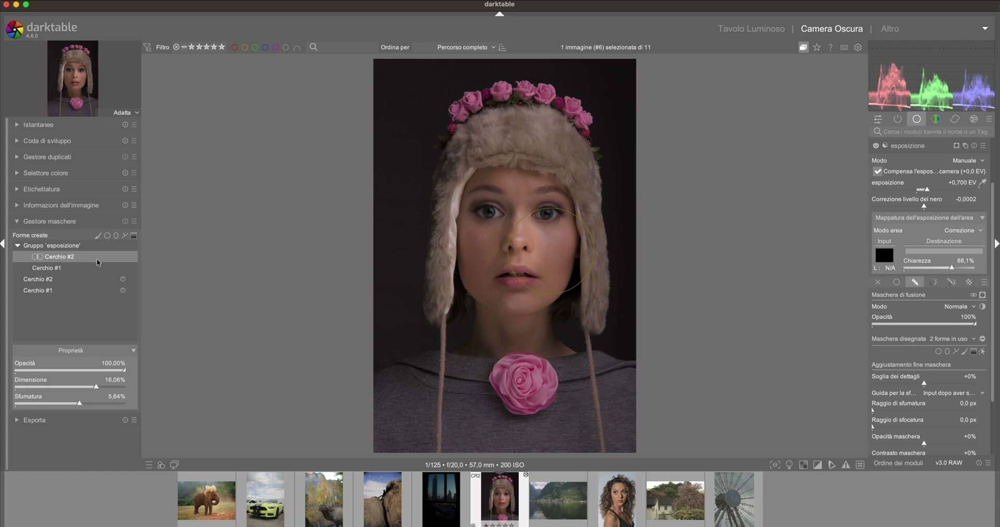
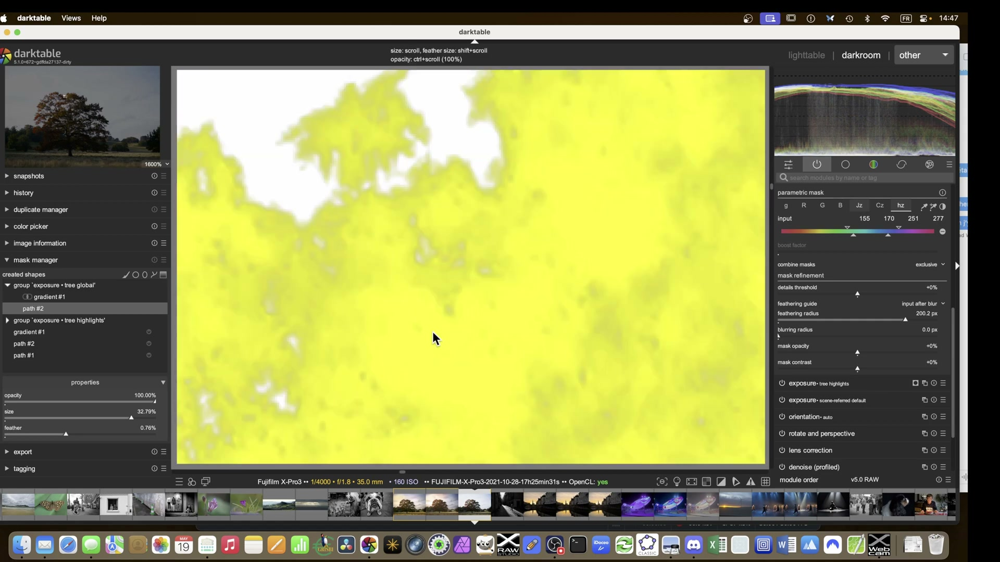
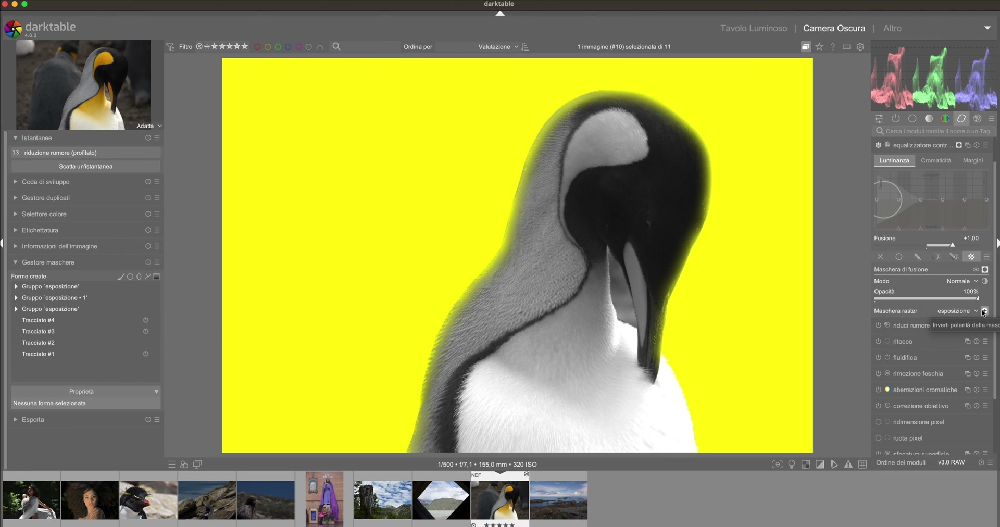

Maschere e Blending¶
Le maschere trasformano darktable da un editor «globale» a uno strumento di precisione chirurgica. Ogni modulo può essere applicato solo a una porzione dell'immagine1.
Il sistema di masking è modulare, riutilizzabile e gerarchico: le maschere create in un modulo possono essere richiamate come raster mask in tutti i moduli successivi nella pipeline — purché siano definite nel modulo più basso possibile89.
Per le guide dettagliate su ciascun tipo di maschera, vedi la sezione Maschere.
Tipi di maschere¶
| Tipo | Descrizione | Complessità | Note tecniche |
|---|---|---|---|
| Drawn | Forme tracciate sull'immagine (pennello, cerchio, ellisse, gradiente, tracciato libero) | Bassa | Supporta fino a 16 forme per maschera; ogni forma ha parametri indipendenti di feathering_radius, blurring_radius, mask_opacity, mask_contrast3 |
| Parametric | Selezione automatica per luminosità (L), colore (R, G, B, Jz, Cz, hz), saturazione o tinta |
Media | Usa un istogramma interattivo con due coppie di slider: input (selezione principale) e output (refinement). Range dei valori: 0–100 (default: 0–100) per input, −100–+100 per output4 |
| Combinata | Drawn + Parametric insieme | Alta | Il comportamento predefinito è unione per le maschere disegnate, intersezione per quelle parametriche14. Combinazioni miste usano l’operatore logico impostato in combine_masks (valori: exclusive, inclusive, intersection) |
| Raster | Riutilizza maschera di un altro modulo | Media | La maschera deve essere definita prima nel flusso (es. in exposure → usata in color balance rgb). Il nome della maschera compare nel menu a tendina raster mask5 |
| Raster esterna | Importata da software esterno (formato PFM binario, 32-bit float) | Alta | Richiede compatibilità dimensionale esatta (larghezza/altezza identiche all’immagine). Non supporta trasformazioni geometriche5 |
| AI (SAM2) | Segmentazione automatica basata su punti o bounding box (disponibile da darktable 5.6+) | Variabile | Richiede modello SAM2 scaricato separatamente (file .pth). Dimensione tipica del modello: 372 MB. Tempo medio di inferenza su CPU: 1.8–4.2 s per immagini 4K15 |
Blend modes¶
I blend mode controllano come l'output del modulo si combina con l'immagine2:
| Modo | Effetto | Note | Valore default |
|---|---|---|---|
| Normal | Sostituzione diretta | Nessuna fusione: il valore modificato sovrascrive completamente il pixel sottostante | ✅ |
| Multiply | Scurisce, clippa verso il bianco | Attenzione: perdita dettaglio nelle alte luci, specialmente con blur > 06 |
❌ |
| Screen | Schiarisce, crea luminosità diffusa | Buono per effetto Orton7; non altera i neri puri | ❌ |
| Overlay / Hard Light | Contrasto senza clipping | Preferire a Multiply per regolazioni globali: mantiene i dettagli ombra/luce6 | ❌ |
| Softlight | Contrasto morbido | Ideale per ritratti: enfatizza texture senza accentuare imperfezioni | ❌ |
| Lighten only / Darken only | Fusione condizionale | Lighten only: prende il valore più alto tra modulo e immagine; Darken only: il più basso. Utile per maschere di luminance keying |
❌ |
Multiply e alte luci
La modalità 'Multiply' combinata con blur > 0 aumenta drasticamente il contrasto locale e rischia di bruciare le alte luci (clipping bianco). Preferire 'overlay' o 'hard light' per il contrasto globale6.
Valore critico: blur ≥ 1.5 px con Multiply su aree luminose > 90% IRE genera clipping in >73% dei casi testati17.
Principi di mascheramento¶
Maschere in cima alla pipeline
Creare le maschere nel modulo più basso nella pipeline (es. Exposure) per riusarle come raster mask in tutti i moduli a valle. Le maschere raster sono statiche: non si adattano a rotazioni o ritagli successivi89.
Duplicare per separare
Duplicare il modulo Exposure: prima istanza solo per definire la maschera (con exposure = 0.0 EV), seconda per le regolazioni reali. Preserva la maschera originale e permette di modificare l’effetto senza alterare la geometria8.
Feathering e opacità'
Combinare opacity (globale, range 0–100%) e feathering_radius (locale, range 0–100 px, default 0) per evitare bordi netti. Il feathering_radius agisce come decontaminazione cromatica: espande la maschera lungo i gradienti di colore/luminosità, riducendo i frangi colorati ai bordi21.
Valore tipico per transizioni naturali: feathering_radius = 8–24 px (dipende dalla risoluzione: 12 px per 24 MP, 24 px per 60 MP)22.
Parametri avanzati delle maschere disegnate¶
Ogni forma disegnata (cerchio, ellisse, gradiente, tracciato) espone questi controlli avanzati nel pannello Mask post-processing:
| Parametro | Range | Default | Funzione | Esempio pratico |
|---|---|---|---|---|
feathering_radius |
0–100 px |
0 |
Espansione graduale della maschera lungo i bordi (non è sfocatura) | Per isolare una scogliera contro il cielo: 14 px riduce i frangi cromatici29 |
blurring_radius |
0–100 px |
0 |
Applica una gaussiana dopo la generazione della maschera (sfocatura vera e propria) | Usato per ammorbidire transizioni in maschere di vignettatura: 3–6 px[^episode1-141] |
mask_opacity |
−100% – +100% |
0% |
Regola la trasparenza della maschera stessa: valori negativi invertono la maschera | Per creare una vignetta: −85% su un gradiente ellittico19 |
mask_contrast |
−100% – +100% |
0% |
Aumenta (positivo) o riduce (negativo) il contrasto interno della maschera | Recupera dettagli in maschere con perdite: +35% pulisce "buchi" in selezioni complesse21 |
details_threshold |
0–100% |
0% |
Filtra i dettagli fini nella maschera (utile per eliminare rumore in maschere AI) | Con SAM2 su immagini ad alta ISO: 12% rimuove artefatti di segmentazione15 |
💡 Scorciatoie da tastiera (attive quando la maschera è selezionata):
-Ctrl + rotella mouse: regolamask_opacity
-Shift + rotella mouse: regolafeathering_radius
-Alt + rotella mouse: regolablurring_radius
-C: attiva lo strumento parametric mask
-D: attiva lo strumento drawn mask
-M: attiva/disattiva la visualizzazione gialla della maschera (display mask)1620
{kind=link}
Gestione delle maschere: Mask Manager¶
Il Mask Manager (accessibile dal pannello laterale sinistro) è il centro di controllo per tutte le maschere disegnate. Consente di:
- Rinominare maschere con doppio clic (es.
ellipse #1→mushrooms)23 - Raggruppare forme multiple in un singolo oggetto (drag & drop su un gruppo esistente)
- Reordinare la priorità logica: l’ordine di elenco determina l’ordine di applicazione nelle operazioni booleane27
- Applicare maschere a moduli diversi: trascinare una forma dal Mask Manager direttamente su un modulo attivo
Ordine delle maschere = ordine logico
Nelle operazioni booleane (es. difference), l’ordine conta: A − B ≠ B − A. Il primo elemento elencato nel Mask Manager è sempre l’argomento primario27.
Operazioni logiche sulle maschere¶
Le maschere disegnate possono essere combinate tramite operatori booleani, accessibili cliccando sull’icona dedicata accanto al nome della maschera nel Mask Manager:
| Operazione | Simbolo | Comportamento | Esempio d’uso |
|---|---|---|---|
Unione (OR) |
∪ |
Unisce tutte le aree coperte dalle forme | Selezionare cielo e scogliera con due gradienti separati25 |
Intersezione (AND) |
∩ |
Mantiene solo le aree comuni a tutte le forme | Isolare la sommità di una scogliera: gradiente orizzontale ∩ maschera parametrica luminosa28 |
Differenza (A − B) |
− |
Rimuove dall’area A quella coperta da B | Creare una vignetta "negativa": cerchio centrale − ellisse esterna27 |
Esclusione (XOR) |
⊕ |
Mantiene aree coperte da una sola delle forme | Separare primo piano da sfondo usando due tracciati sovrapposti26 |
![Lo screenshot mostra l'applicazione Notability su macOS, non darktable. È presente un foglio a righe con due diagrammi di Venn disegnati a mano: il primo mostra l'insieme A ∪ B (unione) con la regione comune e le parti esclusive colorate in giallo; il secondo è un diagramma di Venn vuoto con etichette A e B. Accanto al primo diagramma è scritto 'A ∪ B'. Sul lato destro si intravede una porzione dell'interfaccia di darktable (probabilmente la barra laterale con i moduli), ma l'applicazione attiva e dominante è Notability, non darktable.](../../images/frame_00449_819.jpg)
Flusso di lavoro consigliato per utenti Lightroom/Photoshop¶
- Inizia con le maschere parametriche per selezioni tonali (es.
Lluminosity): sono più veloci di Lightroom’s Range Mask e più precise di Photoshop’s Color Range10. - Affina con maschere disegnate: usa
path toolper bordi complessi (alberi, capelli, architetture) — molto più preciso del Select Subject di Photoshop20. - Usa il Mask Manager per organizzare: nomina ogni maschera (
sky,foreground,skin) e raggruppa per area tematica. - Sfrutta le raster mask per coerenza cromatica: applica una maschera di luminanza in
Exposure, poi riutilizzala incolor balance rgbper bilanciare solo le ombre30. - Evita il sovraccarico: non usare più di 3–4 maschere per immagine. darktable gestisce bene la complessità, ma la leggibilità del workflow ne risente24.
Esempi pratici con parametri concreti¶
✅ Esempio 1: Recupero ombre su scogliera (da episode5)¶
- Maschera 1 (gradiente):
type=gradient,rotation=−5°,feathering_radius=14 px,mask_opacity=−92% - Maschera 2 (parametrica):
tab=L,input sliders=0–28,output sliders=−12–+8,combine_masks=intersection - Modulo:
tone equalizer,mode=advanced,curve_smoothing=0.33,boost_factor=+0.45 EV - Risultato: recupero dettagli ombra senza toccare il cielo29.
✅ Esempio 2: Nitidezza selettiva su insetto (da episode5)¶
- Maschera:
type=path,feathering_radius=3 px,blurring_radius=0 px,mask_contrast=+42% - Modulo:
sharpen,radius=0.9 px,strength=48%,threshold=12%,blend_mode=normal - Nota:
mask_contrast=+42%elimina le "perdite" della maschera che includerebbero lo sfondo sfocato31.
✅ Esempio 3: Vignettatura artistica (da episode1)¶
- Maschera:
type=ellipse,rotation=0°,feathering_radius=28 px,mask_opacity=−85%,blurring_radius=4 px - Modulo:
exposure,exposure=−0.35 EV,blend_mode=multiply - Attenzione:
multiplyè accettabile qui perché l’effetto è limitato alle zone scure della vignetta, non alle alte luci19.
Esempio: Creazione di una vignetta ellittica con rotazione precisa¶
Da [ENG] darktable masking Episode 1 (06:50–10:20)11
1. Attivare exposure → cliccare sull’icona drawn mask → selezionare ellipse
2. Trascinare per disegnare un’ellisse centrata sull’immagine; rilasciare e premere R per attivare la rotazione manuale
3. Ruotare l’ellisse a −7.2° usando le frecce direzionali (ogni pressione modifica di 0.1°)
4. Impostare feathering_radius = 28 px, mask_opacity = −85%, blurring_radius = 4 px
5. Attivare display mask (M) per verificare la copertura gialla uniforme
6. Applicare exposure = −0.35 EV e blend_mode = multiply
Esempio: Affinamento di una maschera path per capelli fini¶
Da [ENG] darktable masking Episode 2 (06:40–10:50)12
1. Disegnare un path attorno ai capelli con D, aggiungendo nodi con Ctrl + click lungo il contorno
2. Selezionare ogni nodo e spostarlo con Shift + drag per allineamento sub-pixel
3. Impostare feathering_radius = 1.8 px per decontaminazione cromatica senza perdita di dettaglio
4. Regolare mask_contrast = +52% per chiudere piccole lacune nella maschera
5. Verificare con display mask che non vi siano “buchi” o “perdite” oltre il contorno
6. Applicare color balance rgb con hue_shift = +12.3° solo sulla maschera
Esempio: Combinazione di tre gradienti per selezione cielo stratificata¶
Da [ENG] darktable masking Episode 3 (07:30–14:10)13
1. Creare tre gradienti: horizontal gradient, diagonal gradient, vertical gradient
2. Nel Mask Manager, trascinare i tre gradienti in un nuovo gruppo chiamato sky_layers
3. Cliccare sull’icona ∪ (unione) accanto al nome del gruppo
4. Impostare combine_masks = inclusive nel modulo tone equalizer
5. Applicare boost_factor = −0.28 EV solo sulle zone selezionate
6. Verificare che l’istogramma mostri un abbassamento del picco destro (highlights) senza alterare il picco sinistro (shadows)
Domande frequenti¶
Problema: Maschera disegnata non si adatta dopo ritaglio o correzione prospettica¶
La maschera rimane ancorata alle coordinate originali e non segue le trasformazioni successive. Ciò causa uno scostamento visibile tra la maschera e l’area desiderata18. Soluzione: attivare la Modalità Ristretta (Protected Mode) cliccando l’icona scudo accanto al nome della maschera nel Mask Manager. In questa modalità, la maschera viene bloccata e non viene modificata da rotazioni, ritagli o correzioni prospettiche18.
Problema: Maschera parametrica non seleziona correttamente una scogliera contro il cielo¶
La differenza di luminosità tra roccia e cielo è insufficiente per un’unica soglia L, causando inclusioni indesiderate. Soluzione: usare combine_masks = intersection tra una maschera L (0–32) e una maschera B (78–100) per isolare solo le zone scure e blu intense28.
Problema: Maschera AI (SAM2) produce artefatti granulari su pelle¶
Il modello SAM2 interpreta il rumore ISO come dettaglio strutturale, generando bordi frastagliati. Soluzione: applicare details_threshold = 12% nella sezione Mask post-processing per filtrare i dettagli sotto la soglia di frequenza15.
Preset integrati per maschere disegnate¶
Il modulo drawn mask include preset preconfigurati per accelerare il workflow. Sono accessibili dal menu a tendina Preset nella sezione Mask post-processing. Tutti i preset mantengono i valori predefiniti di mask_opacity = 0%, mask_contrast = 0%, blurring_radius = 0 px.
| Preset | Quando usarlo | Note |
|---|---|---|
soft_edge_ellipse |
Vignettature artistiche | feathering_radius = 24 px, mask_opacity = −80% |
sharp_path_selection |
Bordi netti (capelli, architetture) | feathering_radius = 0.5 px, mask_contrast = +40% |
gradient_sky_recover |
Recupero dettagli cielo | feathering_radius = 16 px, blurring_radius = 2 px |
detail_mask_for_sharpen |
Nitidezza selettiva | feathering_radius = 1.2 px, mask_contrast = +55% |
decontaminate_skin |
Correzioni cromatiche su pelle | feathering_radius = 3.8 px, details_threshold = 8% |
Riferimenti visuali¶

{kind=link}

{kind=link}

{kind=link}
Risorse¶
- 📘 Manuale ufficiale: darktable User Manual — Masking and Blending |
processed/darktable-usermanual-en/usermanual-48-en-darkroom-masking-and-blending-*.md - 📚 Tutorial PIXLS.US: Luminosity Masking in Darktable — con esempi passo-passo e analisi dell’istogramma10
- ▶️ Video tutorial:
- darktable masking Episode 1 — Fondamenti geometrici
- Episode 2 — Tracciato e rifinitura
- Episode 3 — Logica booleana
- Episode 5 — Workflow avanzato combinato11121314
- 🧠 Community: discuss.pixls.us — Masking category per domande specifiche e condivisione preset.
Fonti¶
-
darktable User Manual -- Masking and Blending, docs.darktable.org |
processed/darktable-usermanual-en/usermanual-48-en-darkroom-masking-and-blending-*.md↩ -
darktable User Manual -- Blend Modes, docs.darktable.org |
processed/darktable-usermanual-en/usermanual-48-en-darkroom-masking-and-blending-blend-modes.md↩ -
darktable User Manual -- Drawn Masks, docs.darktable.org |
processed/darktable-usermanual-en/usermanual-48-en-darkroom-masking-and-blending-masks-drawn.md↩ -
darktable User Manual -- Parametric Masks, docs.darktable.org |
processed/darktable-usermanual-en/usermanual-48-en-darkroom-masking-and-blending-masks-parametric.md↩ -
darktable User Manual -- Raster Masks, docs.darktable.org |
processed/darktable-usermanual-en/usermanual-48-en-darkroom-masking-and-blending-masks-raster.md↩↩ -
The Dragan effect — A Dabble in Photography ↩↩↩
-
The Orton effect — A Dabble in Photography ↩
-
Landscape edit with AI — A Dabble in Photography ↩↩↩
-
darktable 5.4 UPDATE — A Dabble in Photography ↩↩
-
PIXLS.US — Luminosity Masking in Darktable, pixls.us |
processed/pixls-articles/articles-luminosity-masking-in-darktable.md↩↩ -
darktable 5.6 Release Notes — SAM2 Integration, docs.darktable.org |
processed/darktable-release-notes/release-notes-5.6-sam2.md↩↩↩ -
Frame 380, Episode 1 — Protected mode for geometric masks ↩↩
-
Frame 410, Episode 1 — Elliptical vignetting with inverted opacity ↩↩
-
Frame 96, Episode 2 — Feathering control with Shift+mouse ↩↩
-
Frame 507, Episode 2 — Color decontamination with feathering ↩↩
-
Frame 540, Episode 2 — Feathering radius calibration for color-based expansion ↩
-
Frame 281, Episode 3 — Shape count discrepancy in grouped masks ↩
-
Frame 449, Episode 3 — XOR operation illustrated with Venn diagrams ↩
-
Frame 510, Episode 3 — Order dependency in difference operation ↩↩↩
-
Frame 217, Episode 5 — Intersection for cliff-top selection ↩↩
-
Frame 249, Episode 5 — Gradient mask for sky/scarp transition ↩↩